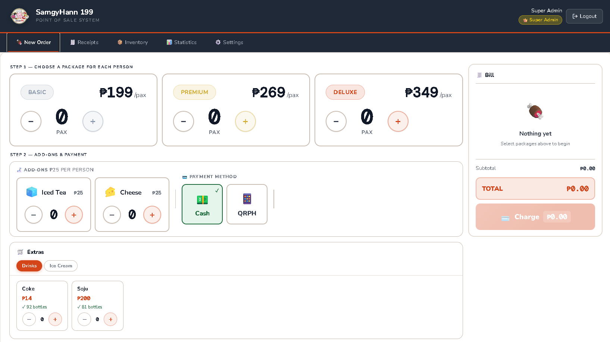

#001
Resolved
POS System — Samgy Hann 199
A full-stack POS and inventory management system for a Korean BBQ restaurant, built as my capstone project: automated billing, role-based access control, real-time inventory tracking and a sales analytics dashboard. Load-tested with JMeter.
- Laravel 12
- Livewire 3
- PHP 8.2
- Alpine.js
- Tailwind CSS
- MySQL